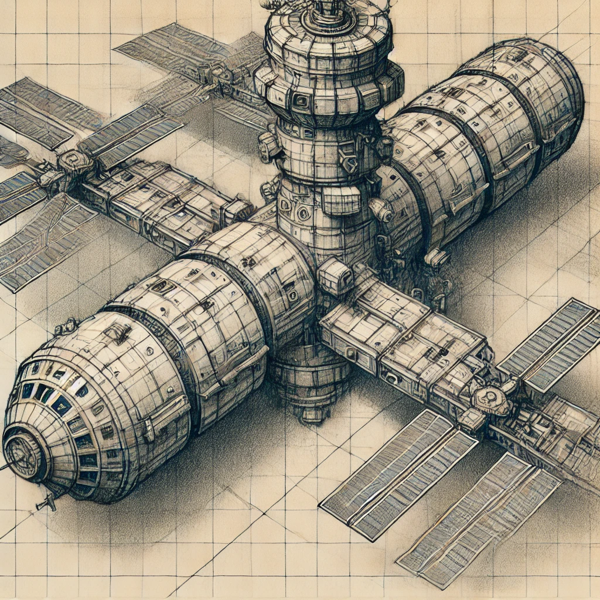

이런, 우리 엄마가 우주선을 유괴했어요
목차
작가
심너울
20230913
2025년
book2이미지.png
작가의 말을 읽고 나와 비슷한 생각을 가진 사람이라고 느껴졌다. 비슷하지만 나보다는 성숙한 작가의 생각이 기억에 남는다.

감상평에 대한 AI평가
~~~~AI평가~~~~~
이 소설은 부모님과 사이의 복잡한 감정 ,꿈과 현실의 괴리 ,위치의 연결을돌하
1. 사용자의 관계
이야기의 핵심은 엄마와 아들 사이의 거리감에서 출발해요.
엄마는 자신의 모습 에 집중하
아들은 그런 엄마를 점점 멀어지게 하는 마음을 품고 다른 길을 선택합니다.그녀.
이런 관계는 일반적으로 볼 수 있는 가족끼리 합갈림을 좋아합니다.
2. 꿈과 현실의 아이러니
아들은 엄마가 좋아하는 책 정도의 푸른 점 을 이해하고 우주를 동경하지만, 일부러 우주와 관련 없는 범위 를 선택합니다.
당신은 어떤 저항인가, 엄마를 믿는 표현이에요.
하지만 가장 많은 스케치한 것이 미르와 마주보는 것입니다.그게 중요해요.
→ 의
이 광경 "
3. 감정적으로 힘이 들다
결국, 아들은 엄마의 꿈이 스며들어 있어요 .
우주를 연구하지 않는 실험체, 무의식적으로 엄마의 꿈을 닮은 뭔가를 만들어낸다는 점에서 여운을
엄마가 이해하거나 후회하는 일은 없지만, 아들은 결국 엄마와 연결되어 있다는 것이 보여요 .
4. 종합 평가
이 소설은 이상한 문제가 아니라 이야기가, 무의식적인 외로움 과 삶에서 벗어나는 것은 부모의 유니크를 유일 하게 끌어들이는 지적입니다.
부모와 관련이 있다는 것은 그렇지 않다는 것입니다.
.
잔잔하면서도 묵직한 감정을 주는, 조각 있는 이야기라고 할 수 있어요. 🌌✨